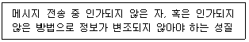
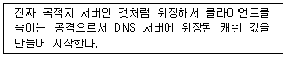
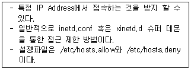

네트워크관리사-1급 (2017-04-09 기출문제)
1과목: TCP/IP
1. TCP/IP에 대한 설명으로 옳지 않은 것은?
- TCP는 데이터링크계층(Data Link Layer) 프로토콜이다.
- IP는 네트워크계층(Network Layer)의 프로토콜이다.
- TCP는 전송 및 에러검출을 담당한다.
- Telnet과 FTP는 모두 TCP/IP 프로토콜이다.
(정답률: 74%)

2. Internet Layer를 구성하는 프로토콜들의 헤더에 대한 설명으로 옳지 않은 것은?
- IP 헤더의 TTL 필드는 Looping에 의해 패킷이 영구히 떠도는 것을 방지하기 위한 필드이다.
- IP 헤더의 프로토콜 필드는 상위 계층의 프로토콜을 식별하기 위해 사용되는 필드이다.
- ICMP Echo Request 패킷의 Type, Code는 각각 '0', '0' 이다.
- ARP Request 패킷의 목적지 MAC Address는 브로드 캐스트인 'FF-FF-FF-FF-FF-FF' 이다.
(정답률: 69%)
3. B Class에 대한 설명 중 옳지 않은 것은?
- Network ID는 128.0 ~ 191.255 이고, Host ID는 0.1 ~ 255.254 가 된다.
- IP Address가 150.32.25.3인 경우, Network ID는 150.32 Host ID는 25.3 이 된다.
- Multicast 등과 같이 특수한 기능이나 실험을 위해 사용된다.
- Host ID가 255.255일 때는 메시지가 네트워크 전체로 브로드 캐스트 된다.
(정답률: 78%)
4. IP Address '128.10.2.3'을 바이너리 코드로 전환한 값은?
- 11000000 00001010 00000010 00000011
- 10000000 00001010 00000010 00000011
- 10000000 10001010 00000010 00000011
- 10000000 00001010 10000010 00000011
(정답률: 88%)
5. 브로드캐스트(Broadcast)에 대한 설명 중 올바른 것은?
- 어떤 특정 네트워크에 속한 모든 노드에 대하여 데이터 수신을 지시할 때 사용한다.
- 단일 호스트에 할당이 가능하다.
- 서브네트워크로 분할할 때 이용된다.
- 호스트의 Bit가 전부 '0'일 경우이다.
(정답률: 73%)
6. 서브넷 마스크(Subnet Mask)의 기능은?
- TCP/IP 네트워크에서 각각의 컴퓨터에 IP Address를 지정한다.
- 네트워크 ID와 호스트 ID를 구분한다.
- 네트워크 관리자가 IP 블록(Block)을 중앙에서 제어한다.
- IPX의 상위에 놓이며 접속 중심의 통신 기능을 제공한다.
(정답률: 79%)
7. IP Address 할당에 대한 설명으로 옳지 않은 것은?
- 198.34.45.255는 개별 호스트에 할당 가능한 주소이다.
- 127.X.X.X는 Loopback으로 사용되는 특별한 주소이다.
- 167.34.0.0은 네트워크를 나타내는 대표 주소이므로 개별 호스트에 할당할 수 없다.
- 호스트 ID의 모든 비트가 1로 채워진 경우는 브로드캐스트로 사용되므로 이러한 주소는 개별 호스트를 위하여 사용될 수 없다.
(정답률: 66%)
8. 네트워크 ID '210.182.73.0'을 6개의 서브넷으로 나누고, 각 서브넷 마다 적어도 30개 이상의 Host ID를 필요로 한다. 적절한 서브넷 마스크 값은?
- 255.255.255.224
- 255.255.255.192
- 255.255.255.128
- 255.255.255.0
(정답률: 71%)
9. IPv6에 대한 설명으로 옳지 않은 것은?
- IPv6 Address는 128bit의 길이로 되어 있다.
- 현재의 IPv4와도 상호 운용이 가능하다.
- 낮은 전송속도를 가지는 네트워크에서는 문제가 있지만, ATM같은 높은 효율성을 가진 네트워크에서도 잘 동작된다.
- IPv6 Address는 각각의 인터페이스와 인터페이스 집합을 정의해준다.
(정답률: 65%)
10. IP 헤더 필드 중 단편화 금지(Don't Fragment)를 포함하고 있는 필드는?
- TTL
- Source IP Address
- Identification
- Flags
(정답률: 64%)
11. TCP 헤더 포맷에 대한 설명으로 옳지 않은 것은?
- Checksum은 1의 보수라 불리는 수학적 기법을 사용하여 계산된다.
- Source 포트 32bit 필드는 TCP 연결을 위해 지역 호스트가 사용하는 TCP 포트를 포함한다.
- Sequence Number 32bit 필드는 세그먼트들이 수신지 호스트에서 재구성되어야 할 순서를 가리킨다.
- Data Offset 4bit 필드는 32bit 워드에서 TCP 헤더의 크기를 가리킨다.
(정답률: 44%)
12. TCP와 UDP의 차이점에 대한 설명으로 옳지 않은 것은?
- 데이터 전송형태로 TCP는 Connection Oriented 방식이고, UDP는 Connectionless방식이다.
- TCP가 UDP보다 데이터 전송 속도가 빠르다.
- TCP가 UDP보다 신뢰성이 높다.
- TCP가 UDP에 비해 각종 제어를 담당하는 Header 부분이 커진다.
(정답률: 81%)
13. ARP와 RARP에 대한 설명 중 옳지 않은 것은?
- ARP와 RARP는 네트워크 계층에서 동작하며 인터넷 주소와 물리적 하드웨어 주소를 변환하는데 관여한다.
- ARP는 IP 데이터그램을 정확한 목적지 호스트로 보내기 위해 IP에 의해 보조적으로 사용되는 프로토콜이다.
- RARP는 로컬 디스크가 없는 네트워크상에 연결된 시스템에 사용된다.
- RARP는 브로드캐스팅을 통해 해당 네트워크 주소에 대응하는 하드웨어의 실제 주소를 얻는다.
(정답률: 43%)
14. ICMP 프로토콜의 기능으로 옳지 않은 것은?
- 여러 목적지로 동시에 보내는 멀티캐스팅 기능이 있다.
- 두 호스트간의 연결의 신뢰성을 테스트하기 위한 반향과 회답 메시지를 지원한다.
- 'ping' 명령어는 ICMP를 사용한다.
- 원래의 데이터그램이 TTL을 초과하여 버려지게 되면 시간 초과 에러 메시지를 보낸다.
(정답률: 63%)
15. SSH 프로토콜은 외부의 어떤 공격을 막기 위해 개발 되었는가?
- Sniffing
- DoS
- Buffer Overflow
- Trojan Horse
(정답률: 66%)
16. 멀티캐스트 라우터에서 멀티캐스트 그룹을 유지할 수 있도록 메시지를 관리하는 프로토콜은?
- ARP
- ICMP
- IGMP
- FTP
(정답률: 78%)
2과목: 네트워크 일반
17. TCP/IP 계층 중 다른 계층에서 동작하는 프로토콜은?
- IP
- ICMP
- UDP
- IGMP
(정답률: 75%)
18. Gigabit Ethernet에 대한 설명에 해당하는 것은?
- MAC계층에서는 토큰 링 프로토콜을 사용한다.
- Gigabit Ethernet에서는 Fast Ethernet의 10배 대역폭을 지원하기 위해 동일한 슬롯크기를 유지 하면서 케이블 거리가 10m 정도로 짧아진다.
- Gigabit Ethernet에서는 슬롯의 크기를 512바이트로 확장하여 전송 속도를 증가시킨다.
- 현재의 Ethernet과의 호환이 어렵고, 연결 설정형 방식이다.
(정답률: 63%)
19. 오류 검사 방식 중 문자 단위로 오류를 검사하는 것으로서, 구성하고 있는 1의 개수가 홀수 개 또는 짝수 개수 인지에 따라 오류 여부를 검출하고, 만약 오류 비트가 짝수개가 발생하면 오류 사실을 검출하지 못하는 오류 검사 방식은?
- 해밍 코드
- 블록합 검사
- 순환중복 검사
- 패리티 검사
(정답률: 73%)
20. 전송한 프레임의 순서에 관계없이 단지 손실된 프레임만을 재전송하는 방식은?
- Selective-repeat ARQ
- Stop-and-wait ARQ
- Go-back-N ARQ
- Adaptive ARQ
(정답률: 70%)
21. 성형 토폴로지의 특징으로 옳지 않은 것은?
- 중앙 제어 노드가 통신상의 모든 제어를 관리한다.
- 설치가 용이하나 비용이 많이 든다.
- 중앙 제어노드 작동불능 시 전체 네트워크가 정지한다.
- 모든 장치를 직접 쌍으로 연결할 수 있다.
(정답률: 74%)
22. 물리계층의 역할에 해당하는 것은?
- 비트 열 송수신을 위한 신호 관리기능 수행
- 링크 간 프레임 전달
- 노드 간 경로선택
- 종단 간 프레임 연결
(정답률: 57%)
23. OSI 7 Layer 중에서 응용프로그램이 네트워크 자원을 사용할 수 있는 통로를 제공 해주는 역할을 담당하는 Layer는?
- Application Layer
- Session Layer
- Transport Layer
- Presentation Layer
(정답률: 53%)
24. 네트워크 액세스 방법에 속하지 않는 것은?
- CSMA/CA
- CSMA/CD
- POSIX
- Token Pass
(정답률: 72%)
25. 광섬유의 특징으로 옳지 않은 것은?
- 광섬유 표면에 상처가 있을 때 파단고장이 발생할 수 있다.
- 광부품의 제조에 미세 가공이 요구된다.
- 광중계기의 전원 공급은 코어를 이용함으로 편리하다.
- 손실 및 분산 현상이 생길 수 있다.
(정답률: 50%)
26. 네트워크 계층에서 데이터의 단위는?
- 트래픽
- 프레임
- 세그먼트
- 패킷
(정답률: 72%)
27. 프로토콜의 기본적인 기능 중에서 수신측에서 데이터 전송량이나 전송 속도 등을 조절하는 기능은?
- Flow Control
- Error Control
- Sequence Control
- Connection Control
(정답률: 73%)
3과목: NOS
28. DNS의 레코드에 대한 설명으로 올바른 것은?
- SOA 레코드는 새로 등록하거나 삭제할 수는 없고 정보만 읽고, 수정할 수 있다.
- A 레코드는 도메인 위임이라는 기능을 구현하기 위해 사용된다.
- CNAME 레코드는 'Alias'라고도 한다.
- PTR 레코드는 호스트 대 IP를 등록하며, 일반 영역에 사용된다.
(정답률: 31%)
29. Windows Server 2008 R2에서 'www.icqa.or.kr'의 IP Address를 얻기 위한 콘솔 명령어는?
- ipconfig www.icqa.or.kr
- netstat www.icqa.or.kr
- find www.icqa.or.kr
- nslookup www.icqa.or.kr
(정답률: 67%)
30. 아파치 설정파일 httpd.conf 파일의 항목 중 접근 가능한 클라이언트의 개수를 지정하는 항목으로 올바른 것은?
- ServerName
- MaxClients
- KeepAlive
- DocumentRoot
(정답률: 72%)
31. Linux에서 마운트에 대한 설명으로 올바른 것은?
- Linux에서 CD-ROM은 마운트 하지 않고 바로 사용할 수 있다.
- USB는 '#mount -t iso9660 /dev/fd0/ mnt/usb'와 같은 방법으로 마운트 시킨다.
- 마운트를 해제하는 명령어는 'unmount'이다.
- 해당파일 시스템이 사용 중이면 'mount'가 해제되지 않는다.
(정답률: 43%)
32. Linux에서 프로세스의 상태를 확인하고자 할 때 사용하는 명령어는?
- ps
- w
- at
- cron
(정답률: 75%)
33. Linux 시스템에서 'chmod 644 index.html'라는 명령어를 사용하였을 때, 'index.html' 파일에 변화되는 내용으로 옳은 것은?
- 소유자의 권한은 읽기, 쓰기가 가능하며, 그룹과 그 외의 사용자 권한은 읽기만 가능하다.
- 소유자의 권한은 읽기, 쓰기, 실행이 가능하며, 그룹과 그 외의 사용자 권한은 읽기만 가능하다.
- 소유자의 권한은 쓰기만 가능하며, 그룹과 그 외의 사용자 권한은 읽기, 쓰기가 가능하다.
- 소유자의 권한은 읽기만 가능하며, 그룹과 그 외의 사용자 권한은 읽기, 쓰기, 실행이 가능하다.
(정답률: 67%)
34. Linux에서 네트워크 인터페이스 카드 설정 및 정보를 확인할 수 있는 명령어는?
- ifconfig
- traceroute
- sndconfig
- mount
(정답률: 68%)
35. 리눅스의 가상 파일시스템으로 동작 중인 프로세스의 상태 정보, 하드웨어 정보, 시스템 정보 등을 확인할 수 있는 디렉토리로 올바른 것은?
- /boot
- /etc
- /proc
- /lib
(정답률: 60%)
36. FTP Server 구축시 가상 디렉터리를 구성하는 이유는 무엇인가?
- 포트를 설정해서 사용하는 것보다 가상디렉터리를 사용하는 것이 편해서 가상디렉터리를 구성 한다.
- 사용자 계정으로 접근할때는 ftp 포트번호 대신 반드시 가상디렉터리로 접근해야 한다.
- 21번 포트가 이미 설정되어있다면 다른 포트번호를 설정 할 수 없으므로 가상디렉터리를 구성한다.
- 보안상 사용자가 실제 컨텐츠가 있는 디렉터리 경로를 알 수 없도록 하기 위해서 가상디렉터리를 구성한다.
(정답률: 66%)
37. Windows Server 2008 R2에서 'netstat' 명령이 제공하는 정보로 옳지 않은 것은?
- 인터페이스의 구성 정보
- 라우팅 테이블
- IP 패킷이 목적지에 도착하기 위해 방문하는 게이트웨이의 순서 정보
- 네트워크 인터페이스의 상태 정보
(정답률: 57%)
38. Windows Server 2008 R2의 Active Directory 서비스 중에서 사용자 지정된 공개 키 인증서를 만들고 배포하고 관리하는 방법을 제공하는 서비스는?
- AD 인증서 서비스
- AD 도메인 서비스
- AD Federation 서비스
- AD Rights Management 서비스
(정답률: 65%)
39. Windows Server 2008 R2의 Hyper-V의 가상디스크에 관한 설명으로 옳지 않은 것은?
- 고정 크기 디스크를 만들면 요청한 크기만큼 0으로 채워진 파일이 생성된다.
- 차등 디스크는 부모-자식 구조를 가진다.
- 다이내믹 확장 디스크는 테스트 용도로 적합하지 않다.
- Hyper-V는 가상 컴퓨터를 위해 세 가지 종류의 가상 디스크를 제공한다.
(정답률: 46%)
40. Windows Server 2008 R2에서 EFS나 BitLocker 기능이 지원하는 보안의 요소는?
- 무결성
- 기밀성
- 가용성
- 부인방지
(정답률: 50%)
41. Windows Server 2008 R2 서버의 새로운 보안 기능으로 옳지 않은 것은?
- SSTP VPN(Secure Socket Tunneling Protocol Virtual Path Network) 기능 향상
- NAP(Network Access Protection) 기능 추가
- 세분화된 암호 정책
- UTM(unified threat management) 기능 추가
(정답률: 54%)
42. Windows Server 2008 R2의 VPN Server의 클라이언트 인증하는 방법이다. 다음 설명 중 옳지 않은 것은?
- 컴퓨터 상태 검사만 수행 - 특정한 컴퓨터만 접속 가능하게 한다.
- 암호화 안 된 인증(PAP, SPAP) - 인증을 단순 문자열로 주고받는다. 프로토콜 분석기로 패킷을 가로채서 자격증명을 읽을 수 있다.
- 암호화인증 (CHAP) - 암호화된 인증 프로토콜로 최초로 사용되었다. 정기적으로 새로운 NONCE를 클라이언트에 보내 이 세션에서 새로운 연결을 한다.
- Microsoft 스마트 카드 또는 기타 인증서 - 인증서를 발급하고 스마트 카드를 사용자가 가짐으로써 다단계 인증을 제공 할 수 있다.
(정답률: 46%)
43. Windows Server 2008 R2에서 보안 감사 정책 중 감사항목과 설명으로 옳지 않은 것은
- 정책변경: 사용자 계정 또는 그룹의 생성, 변경, 삭제, 암호의 설정 및 변경등의 이벤트 성공/실패 로그를 기록
- 권한 사용: 권한 사용의 성공 및 실패를 감사할 경우 사용자 권한을 이용하려고 할 때마다 이벤트 생성
- 로그온 이벤트: 로컬 계정에 대한 로그온/오프 성공/실패에 대한 이벤트를 기록할지를 결정
- 시스템 이벤트: 시스템 시작 또는 종료, 보안 로그에 영향을 미치는 이벤트 등을 감사할지 여부를 결정
(정답률: 33%)
44. Windows Server 2008 R2의 이벤트 뷰어에 대한 설명으로 옳지 않은 것은?
- '이 이벤트에 작업 연결'은 이벤트 발생 시 특정 작업이 일어나도록 설정하는 것이다.
- '현재 로그 필터링'을 통해 특정 이벤트 로그만을 골라 볼 수 있다.
- 사용자 지정 보기를 XML로도 작성할 수 있다.
- '구독'을 통해 관리자는 로컬 시스템의 이벤트에 대한 주기적인 이메일 보고서를 받을 수 있다.
(정답률: 46%)
45. Windows Server 2008 R2의 성능 모니터에 관한 설명으로 옳지 않은 것은?
- 데이터 수집기 집합을 통하여 시스템의 위험 성능 데이터를 모으고 볼 수 있다.
- 실시간으로 시스템의 상태를 보거나 성능 변경사항에 대한 로그를 만들 수 있다.
- 메모리, 네트워크 인터페이스, 디스크 서브 시스템, 프로세서의 정보를 실시간으로 보여준다.
- Windows Server 설치 시 기본으로 설치되지 않으므로 별도로 설치하여야 한다.
(정답률: 65%)
4과목: 네트워크 운용기기
46. OSPF Area에 대한 설명으로 옳지 않은 것은?
- 다수의 Area를 구성할 때 'Area 0'은 반드시 있어야 한다.
- Stub Area 내부에는 LSA Type 5가 유입되지 않는다.
- Area 내부의 라우터들의 자원의 규모가 작을 경우, 그 Area를 Stub Area로 적용하면 적절하다.
- Totally Stub Area내부에는 LSA Type 3가 유입된다.
(정답률: 33%)
47. Hub가 사용하는 OSI 계층은?
- 물리 계층
- 세션 계층
- 트랜스포트 계층
- 애플리케이션 계층
(정답률: 75%)
48. 네트워크 장비 중 Repeater의 특징으로 옳지 않은 것은?
- 회선상의 전자기 또는 광학 신호를 증폭하여 네트워크의 길이를 확장할 때 쓰인다.
- OSI 7 Layer 중 물리적 계층에 해당하며 두 개의 포트를 가지고 있어 한쪽 포트로 들어온 신호를 반대 포트로 전송한다.
- HUB에 Repeater 회로가 내장되어 Repeater를 대신하여 사용하는 경우가 있다.
- 단일 네트워크에는 여러 대의 Repeater를 사용 할 수가 없다.
(정답률: 51%)
49. CISCO 라우터 상에서 OSPF의 Neighbor의 상태를 확인할 수 있는 명령어로 올바른 것은?
- show ip ospf interface
- show ip ospf database
- show ip ospf neighbor
- show ip ospf border-router
(정답률: 71%)
50. RAID 방식 중 미러링(Mirroring)이라고 하며, 최고의 성능과 고장대비 능력을 발휘하는 것은?
- RAID 0
- RAID 1
- RAID 3
- RAID 5
(정답률: 62%)
5과목: 정보보호개론
51. SET(Secure Electronic Transaction)에 대한 설명 중 옳지 않은 것은?
- 초기에 마스터카드, 비자카드, 마이크로소프트, 네스케이프 등에 의해 후원되었다.
- 인터넷상에서의 금융 거래 안전을 보장하기 위한 시스템이다.
- 메시지의 암호화, 전자증명서, 디지털서명 등의 기능이 있다.
- 지불정보는 비밀키를 이용하여 암호화한다.
(정답률: 56%)
52. 정보보호 서비스 개념에 대한 아래의 설명에 해당 하는 것은?

- 무결성
- 부인봉쇄
- 접근제어
- 인증
(정답률: 64%)
53. 분산 환경에서 클라이언트와 서버 간에 상호 인증기능을 제공하며 DES 암호화 기반의 제3자 인증 프로토콜은?
- Kerberos
- Digital Signature
- PGP
- Firewall
(정답률: 55%)
54. 다음은 TCP/IP 공격 유형에 대한 설명이다. 올바른 것은?

- DNS 캐쉬 포이즌(DNS Cache Poisoning)
- Denial of Service
- Data Insertion
- Man in the middle
(정답률: 67%)
55. Linux의 서비스 포트 설정과 관련된 것은?
- /etc/services
- /etc/pam.d
- /etc/rc5.d
- /etc/service.conf
(정답률: 59%)
56. Linux 시스템에서 아래 내용이 설명하는 것은?

- TCP_Wrapper
- PAM
- SATAN
- ISSm
(정답률: 58%)
57. '대칭키 암호 시스템'과 '비대칭키 암호 시스템'의 비교 설명으로 옳지 않은 것은?
- 키의 분배 방법에 있어 대칭키 암호 방식은 비밀스럽게 분배하지만 비대칭키 암호 방식은 공개적으로 한다.
- DES는 대칭키 암호 방식이고, RSA는 비대칭키 암호 방식이다.
- 대칭키 암호 방식은 비대칭키 암호 방식보다 암호화의 속도가 빠르다.
- N명의 사용자가 서로 데이터를 비밀로 교환하려 할 때 대칭키 암호 방식에서 필요한 키의 수는 2N 개이고, 비대칭키 암호 방식에서는 'N(N-1)/2' 개가 필요하다.
(정답률: 51%)
58. LINUX 시스템에서 패스워드의 유효 기간을 정하는데 사용될 수 없는 방법은?
- '/etc/login.defs' 의 설정을 사용자 account 생성 시 지정
- chown 명령을 활용하여 지정
- '/etc/default/useradd' 파일의 설정을 account 생성 시 지정
- change 명령을 활용하여 지정
(정답률: 60%)
59. 시스템 침투 형태 중 IP Address를 접근 가능한 IP Address로 위장하여 침입하는 방식은?
- Sniffing
- Fabricate
- Modify
- Spoofing
(정답률: 57%)
60. Linux 커널에서 기본으로 제공하는 넷필터(Net Filter)를 이용하여 방화벽을 구성할 수 있는 패킷 제어 프로그램은?
- iptables
- nmap
- fcheck
- chkrootkit
(정답률: 59%)